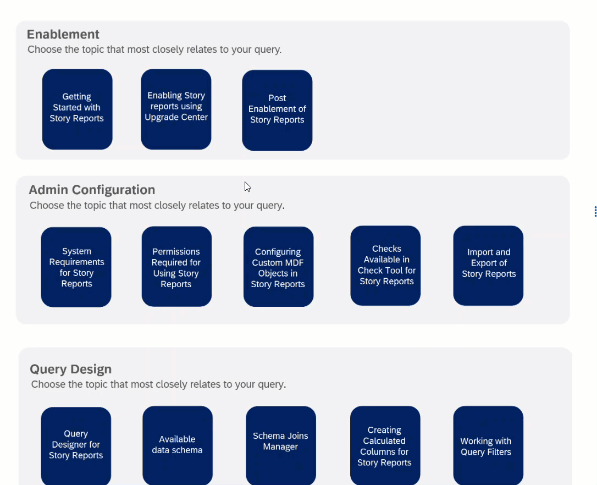

Analysed 500 customer support cases to surface the real gaps in help content, then redesigned documentation as task-oriented guidance and interactive flowcharts — contributing to a 10% reduction in support cases after the October 2025 release.

SAP SuccessFactors Report Center was generating a steady stream of support cases. The existing help documentation was largely conceptual and reference-oriented — it explained what Report Center was, but didn't walk users through the tasks that were actually causing them problems.
Customers contacting support were often stuck on the same small set of issues: permission errors, missing data, report configuration steps that weren't documented end-to-end. Each case took time from support agents and frustrated users who expected to find answers in the help content.
Without analysing the cases, it was impossible to know which documentation gaps were driving the most volume — and without that, any content updates were guesswork.